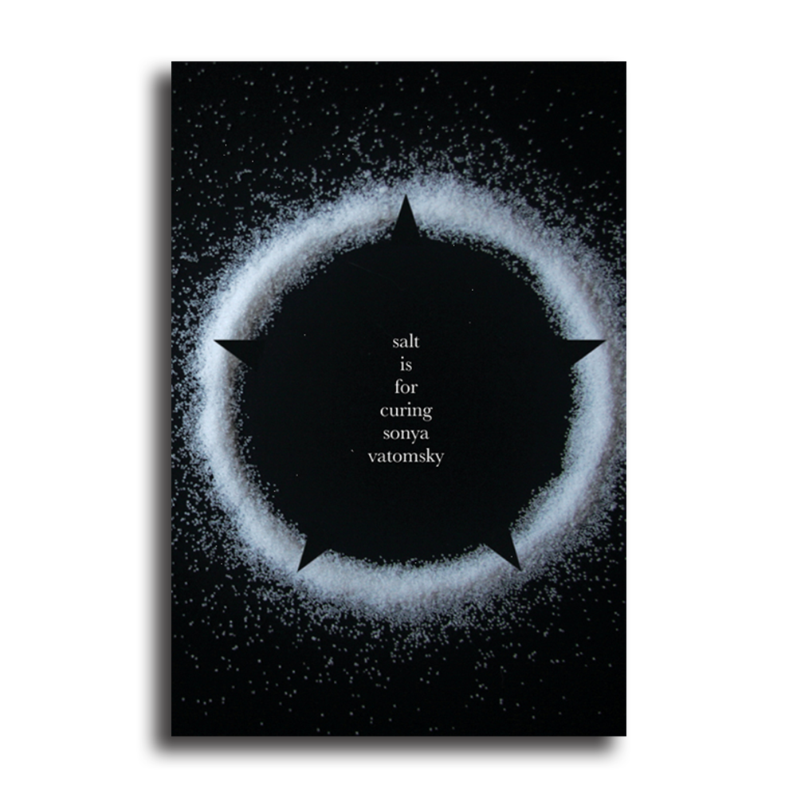

Salt is For Curing: A Review
by Christopher Morgan Freshly served by Sator Press, Sonya Vatomsky’s first full-length collection, “Salt is For Curing” uses its dark feasts and folklore to explore the frailty of our memories and bodies. With photography by Sator’s founding editor, the cover’s salt circle invokes and repels darkness, sealing the poems within. Guiding readers through its three courses, Vatomsky’s poetry is a truly generous offering, complete with aperitif and digestif.
As the title reminds how we can hold onto things for an almost unnatural length of time, much of this collection commemorates what’s passed. The opening poem, “Bathymetry,” stretches from old legends of empowerment and oppression all the way to the present, as we’re told: “I’ve got the kind of light / you name galaxies after. / Andromeda, for example, / which means “ruler of men” / so, of course / they stripped her naked and chained her / to a rock” (11). Like a dinner toast for a death, this collection’s recurring spells and other forms crystallize facts for future audiences:
Whether by broiling, carving, or extracting, these poems address grief on their own terms. Blending personal experience with instruction, Vatomsky teaches us that tears are a surprisingly fine substitute for most ingredients, and that, “To brew a love potion is to kill yourself but to poison is to breathe” (71). But these poems also serve as timelines, occupying the past to resist forgetting. With its many references to food and language, “Salt is For Curing” blurs the line between identity and context, and how we place ourselves within our own history.
Yet these poems recognize that no amount of salt can preserve something forever. Food must be eaten, or it perishes. Bodies must be buried, or hidden. Leading us into the swamplands by a “chain of rope and scarves,” the speaker laments: “I am being carefully and / systemically forgotten” (22), as if even memories decay in the mire. But these poems know the dirty details required for moving on, whether from a stern mother’s advice, or somebody who’s learned the “safest place to bury a body / is in another body / is in your own body” (17). Vatomsky knows we learn through pain—licking our wounds until the taste of blood no longer scares us—as a witch “can only be burned so many times before she thinks hmm / something has got to change here” (73).
“Salt is For Curing” offers the ultimate reward in exchange for your darkest red. Making a thick paste from a phoenix’s bones to reexamine resurrection myths, these poems count all 32 teeth, then eat your words with bread. Sonya Vatomsky reflects upon salt and suffering, creating a literary love potion that’s equal parts wishing well and butcher’s hook.
Find “Salt is For Curing” here from Sator Press
I highly recommend this great interview with Sonya at Maudlin House, which includes interesting facts about the book’s roots and exorcisms.
Sonya Vatomsky can be found on Twitter and Tumblr
Sonya is currently working on poems exploring gender and mental illness–you can read 3 in the next Noble / Gas Quarterly. They have also been guest-editing an issue of Anthropoid and will soon be joining the collective in some kind of permanent capacity.
Review by Christopher Morgan